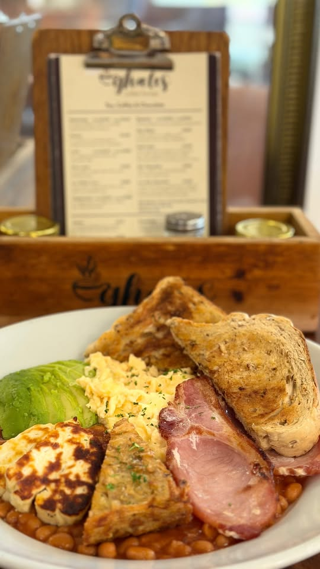

Festive starters
- Homemade soup of the day with warm bread
- Prawn cocktail
21 Finchfield Road West, Wolverhampton
Coffee, breakfast, brunch and a little time to yourself. Join us in Finchfield for flavourful food and drinks.

Breakfast & brunch. A coffee catch-up. Something sweet on the side.

We're a café and coffee shop serving flavourful food and drinks, with meat, veggie and vegan options available.
Settle in for breakfast or brunch, enjoy our outdoor seating, or ask us about delivery.
Plan your visit
A coffee moment,
made for you.
From breakfast plates to a sweet finish, take a look around the lounge.



Gather together over festive favourites, from a warming starter to a sweet Christmas finish.
Music, sharing platters and a Christmas special at Ghales. Speak to us for event enquiries.
An evening of live music with a three-course meal.
£35 per person
With a sharing platter.
£15 per person
Christmas special with Lynn Round and Greg Smith, psychic mediums.
Fully booked£29.95 per person
Telephone01902 764523
Emailjghale2018@gmail.com